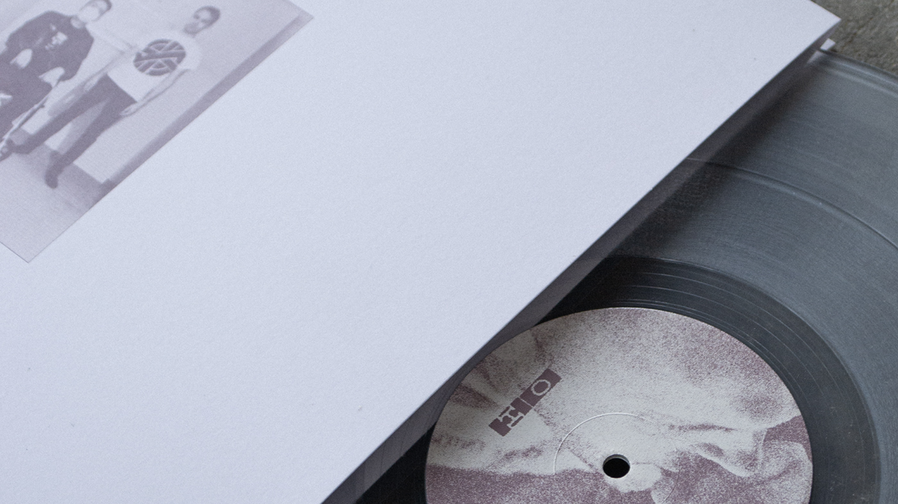
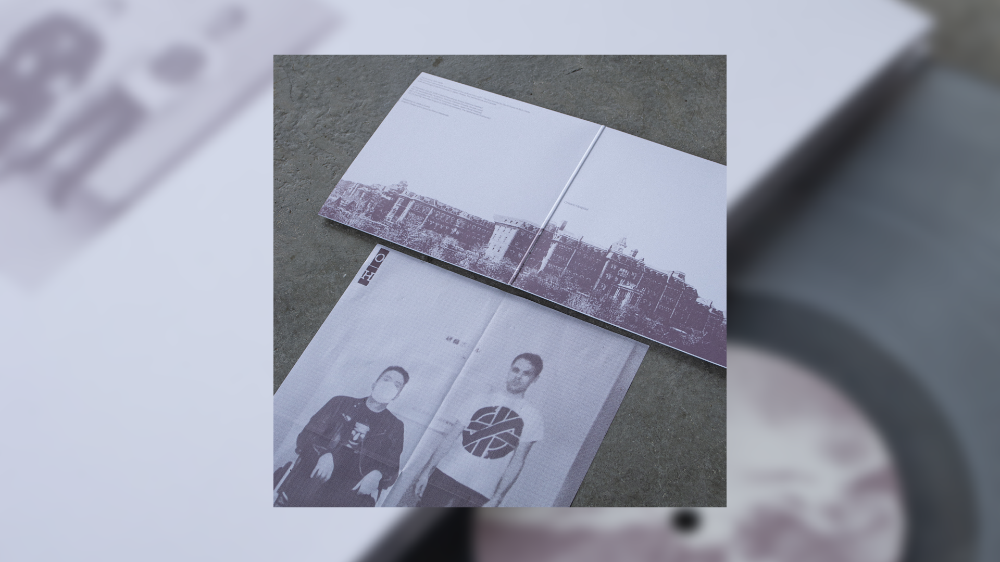
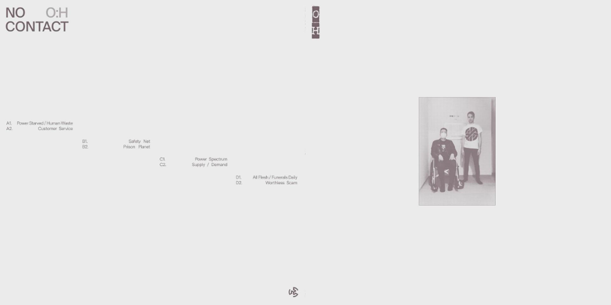
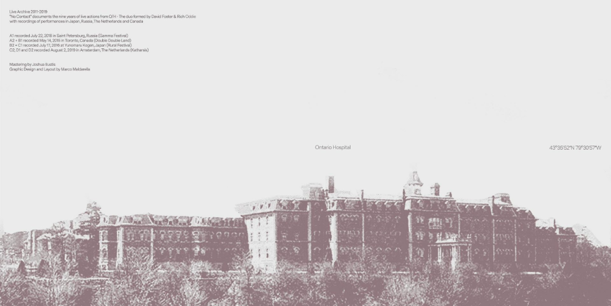
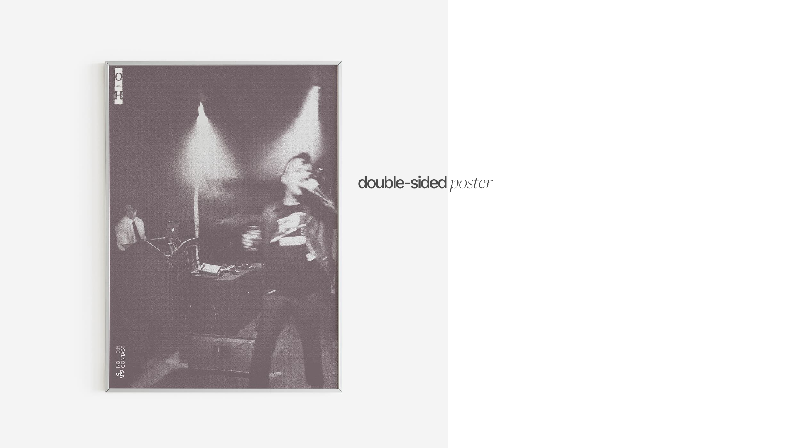
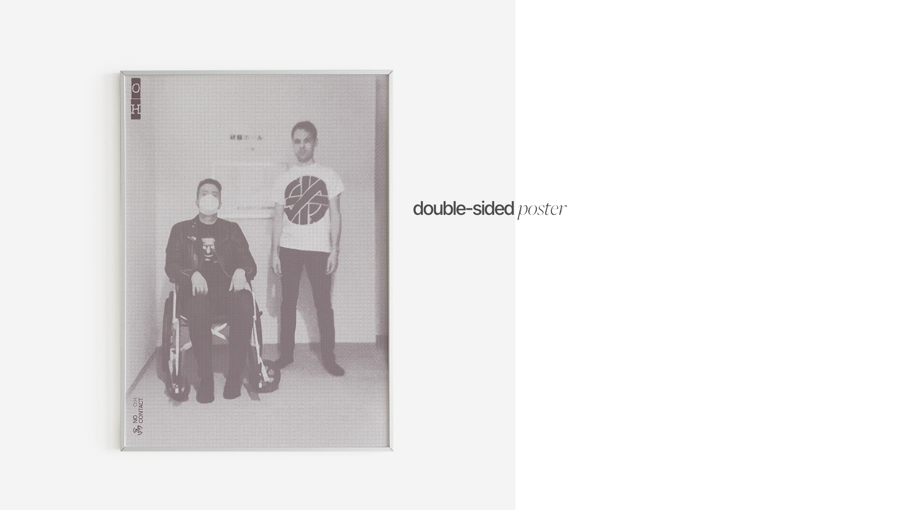

Along with Marco, we designed the cover and prints for the two vinyl releases of the electronic-industrial punk project O/H, for the independent label KR3.






The project takes its name from a
psychiatric hospital. Over the years,
the duo has built a strong presence
in the electronic-industrial scene.
No Contact stems from nine years of
performances, spanning from 2011
to 2019.
We developed the concept of representing the hospital in a blurry, ambiguous way — somewhere between a lapse of memory and a grandfather’s postcard of an eerie place — shaping both the colour palette and the layout.